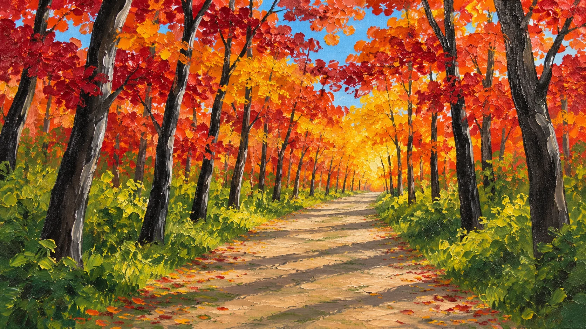

Follow the pathinto the light
Scroll to walk
At the end of the path
The gallery
[Short introduction to the work, to be supplied]
[Painting title 1][Year · medium]
[Painting title 2][Year · medium]
[Painting title 3][Year · medium]
[Painting title 4][Year · medium]
[Painting title 5][Year · medium]
[Painting title 6][Year · medium]